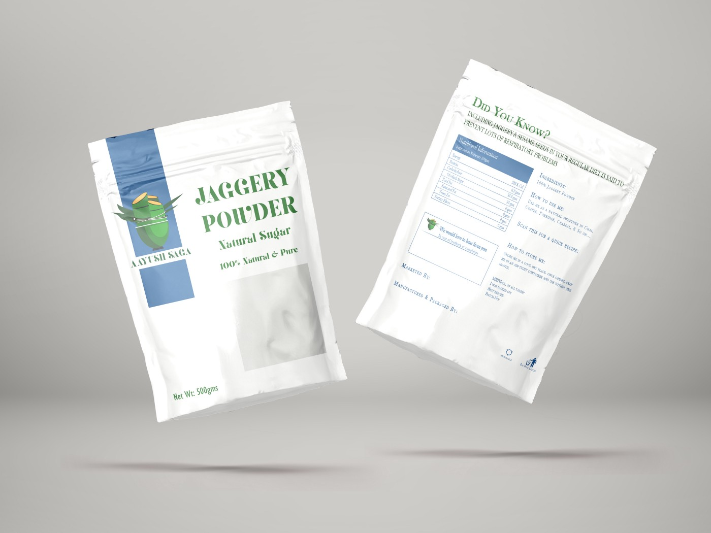

Aayushsaga - Package design and mockup process
One fine day, I was on a call with one of my collegemates. Talking to me about him joining his friend, in a jaggery powder business. (considering his nickname was an apt business for him :-P). He was looking out for someone who could design packaging and some things for their website, So me being me I took up that project. As I wanted to learn and work on my research skills. So I visited their website and I saw the logo which looked like this
Which didn't look like a company which sold organic jaggery powder. It looked more like a company that worked with and sold something mechanical. So I decided to start with the logo, I got into reading and market(competitor) research. I was instructed by my mate to stick with the colour scheme of the website. This was the colour scheme I decided to go with.
The next step was to design a logo that went with the product that is organic jaggery powder. Well, jaggery is made using sugar cane and it is the healthier brother of sugar(not for diabetic people though). Since the product is direct farm to bowl I decided to stick to the raw material(sugarcane) and the place it will reach(bowl). So the logo design consisted of 2 main components, Sugarcane and a bowl. The design of the sugarcane was done in such a way that it kind of resembled bamboo as bamboo is a symbol of growth and strength. Here is how it came out:
The font that I used for the company name is “Giaza Pro” the reason being it gave a more premium look and a feel of luxury to the name. The name looked more elegant.
And this was the final design:
Before:
After:
_______________________________________________________________________________________________________
Designing the Package
I have never done any package designs or retail package designs. So back to market and user research. On doing a quick google search I found out that most companies kept the product name prominent as compared to the company logo, to understand the idea behind this I had to look at how I and people around me picked a product. When I examined how I went shopping and picked something up I realised that I looked at the name of the product and then the name of the company. Just to confirm that if it was just me to the people(included my friends and colleagues) around me also did the same. One more thing I wanted to get clarity on was the difference in sales of products with bigger company names and products with the name of the product being prominent. To find this out I went to a local supermarket(the Manager is an acquaintance of mine), findings were quite interesting. The product with the product name prominent sold 10% more than the one with a bigger company logo. Product with terms like “organic”, “100% Natural” we sold more compared to their counterparts.
Finally, after 3 iterations, this was the final outcome, in the front side of the packaging font used in the logo was used, for the backside of the packaging ‘Baskerville’ font was used.